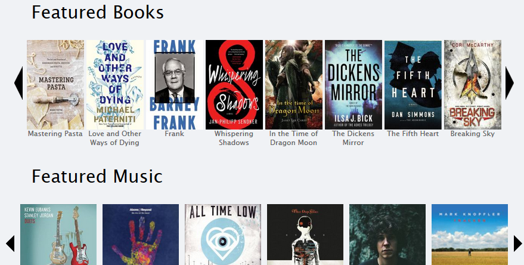
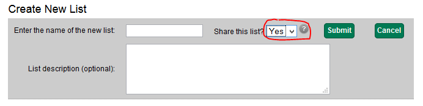
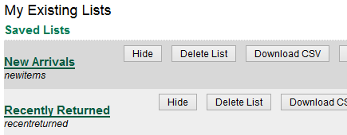

Slides available at:
slides.mobiusconsortium.org/blake/bookcarousel
Created by Blake Graham-Henderson / blake@mobiusconsortium.org
Press ESC to browse slides



Slides available at:
slides.mobiusconsortium.org/blake/evergreencatclean
Github repo:
https://github.com/mcoia/mobius_evergreen/tree/master/bookbag_update